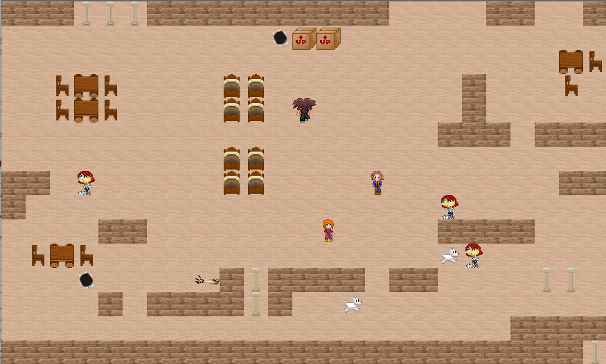
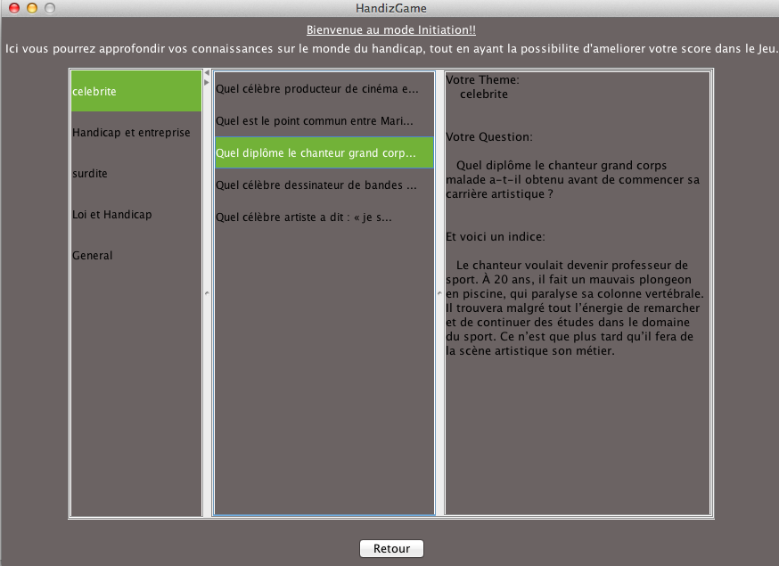
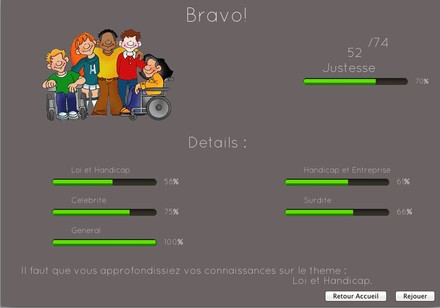

Screenshots

Bienvenue dans l'univers de HandizGame : Ici vous pourrez découvrir le jeu à travers quelques captures d'écran accompagnées de petites explications en espérant que cette mise en abyme vous poussera à vouloir découvrir plus en profondeur le jeu et l'univers du handicap.

Voici le mode Initiation qui vous permettra d'entrer avec plus de facilite dans l'univers HandizGame. En effet ce module vous proposera de decouvrir certaines questions accompagnées d'indice qui vous aiderons a faire une meilleur entree en matiere.

Enfin vous pourrez evaluez vos capacites sur le sujet afin de travailler plus en profondeur sur vos faiblesses. Desormais n'attendez plus et telechargez notre jeu.
Download